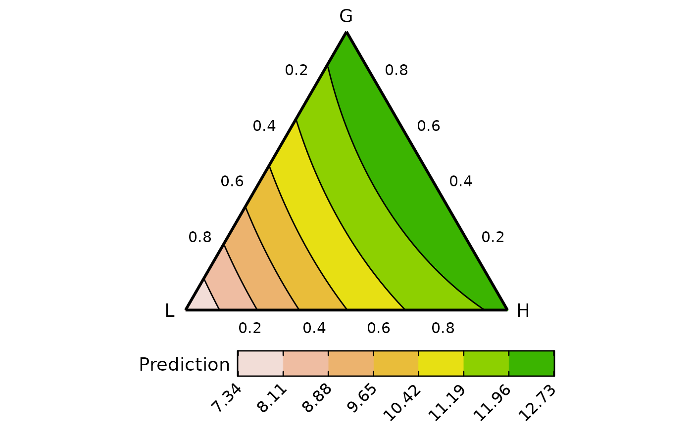
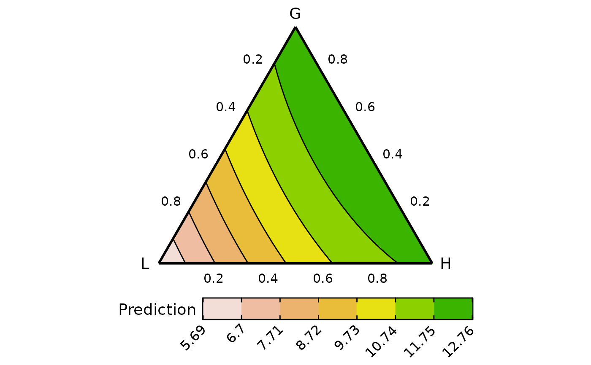
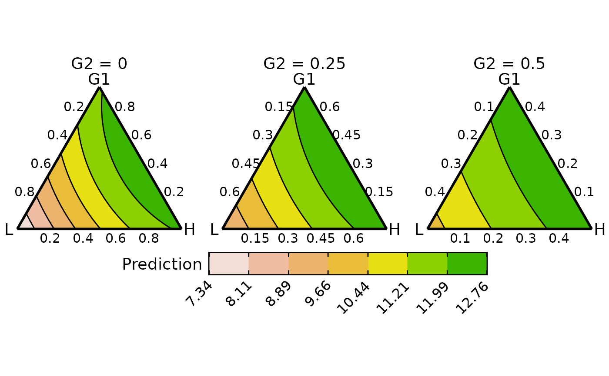

Conditional ternary diagrams at functional group level
grouped_ternary.RdGrouped ternary diagrams are created by combining the proportions of the
compositional variables into groups and visualising these groups on a 2-d
ternary diagram. These are very useful when we have multiple compositional
variables that can be grouped together by some hierarchical grouping structure.
For example, grouping species in a ecosystem based on the functions they perform,
or grouping political parties based on their national alliances. Grouping
variables this way allows us to reduce the dimensionality of the compositional
data and visualise it. This is akin to looking at a 2-d slice of the high
dimensional simplex. The relative proportions of each variable within a group
can be adjusted to look at different slices of the simplex. Looking at multiple
such slices would enable us to create an approximation of how the response varies
across the original n-dimensional simplex.
This is a wrapper function specifically for statistical models fit using the
DI() function from the
DImodels R package and would implicitly
call grouped_ternary_data followed by
grouped_ternary_plot. If your model object isn't fit using
DImodels, consider calling these functions manually.
Usage
grouped_ternary(
model,
FG,
values = NULL,
tern_vars = NULL,
conditional = NULL,
add_var = list(),
resolution = 3,
plot = TRUE,
nlevels = 7,
colours = NULL,
lower_lim = NULL,
upper_lim = NULL,
contour_text = TRUE,
show_axis_labels = TRUE,
show_axis_guides = FALSE,
axis_label_size = 4,
vertex_label_size = 5,
nrow = 0,
ncol = 0
)Arguments
- model
A Diversity Interactions model object fit by using the
DI()function from theDImodelspackage.- FG
A character vector specifying the groupings of the variables specified in `prop`.
- values
A numeric vector specifying the proportional split of the variables within a group. The default is to split the group proportion equally between each variable in the group.
- tern_vars
A character vector giving the names of the three variables to be shown in the ternary diagram.
- conditional
A data-frame describing the names of the compositional variables and their respective values at which to slice the simplex space. The format should be, for example, as follows:
data.frame("p1" = c(0, 0.5), "p2" = c(0.2, 0.1))
One figure would be created for each row in `conditional` with the respective values of all specified variables. Any compositional variables not specified in `conditional` will be assumed to be 0.- add_var
A list or data-frame specifying values for additional variables in the model other than the proportions (i.e. not part of the simplex design). This could be useful for comparing the predictions across different values for a non-compositional variable. If specified as a list, it will be expanded to show a plot for each unique combination of values specified, while if specified as a data-frame, one plot would be generated for each row in the data.
- resolution
A number between 1 and 10 describing the resolution of the resultant graph. A high value would result in a higher definition figure but at the cost of being computationally expensive.
- plot
A boolean variable indicating whether to create the plot or return the prepared data instead. The default
TRUEcreates the plot whileFALSEwould return the prepared data for plotting. Could be useful if user wants to modify the data first and then create the plot.- nlevels
The number of levels to show on the contour map.
- colours
A character vector or function specifying the colours for the contour map or points. The number of colours should be same as `nlevels` if (`show = "contours"`).
The default colours scheme is theterrain.colors()for continuous variables and an extended version of the Okabe-Ito colour scale for categorical variables.- lower_lim
A number to set a custom lower limit for the contour (if `show = "contours"`). The default is minimum of the prediction.
- upper_lim
A number to set a custom upper limit for the contour (if `show = "contours"`). The default is maximum of the prediction.
- contour_text
A boolean value indicating whether to include labels on the contour lines showing their values (if `show = "contours"`). The default is
TRUE.- show_axis_labels
A boolean value indicating whether to show axis labels along the edges of the ternary. The default is
TRUE.- show_axis_guides
A boolean value indicating whether to show axis guides within the interior of the ternary. The default is
FALSE.- axis_label_size
A numeric value to adjust the size of the axis labels in the ternary plot. The default size is 4.
- vertex_label_size
A numeric value to adjust the size of the vertex labels in the ternary plot. The default size is 5.
- nrow
Number of rows in which to arrange the final plot (when `add_var` is specified).
- ncol
Number of columns in which to arrange the final plot (when `add_var` is specified).
Value
A ggmultiplot (ggplot if single plot is returned) class object or data-frame (if `plot = FALSE`)
Examples
library(DImodels)
library(dplyr)
data(sim3)
m1 <- DI(y = "response", prop = paste0("p", 1:9),
DImodel = "AV", data = sim3) %>%
suppressWarnings()
#> Fitted model: Average interactions 'AV' DImodel
## We have nine (p1 to p9) variables here and using `conditional_ternary`
## to visualise the simplex space won't be very helpful as there are too
## variables to condition on
## Instead we group the nine-variables into three groups called "G", "L" and "H"
grouped_ternary(model = m1, FG = c("G","G","G","G","G","L","L","H","H"),
resolution = 1)
#> Warning: The proportional split of species in the groups was not specified in `values`,
#> assuming an equal split for species in each group.
#> ✔ Finished data preparation.
#> ✔ Created plot.

## By default the variables within a group take up an equal share of the
## group proportion. So for example, each point along the above ternary
## would have a 50:50 split of the variables in the group "L" or "H", thus
## the vertex where "L" is 1, would mean that p6 and p7 are 0.5 each,
## similarly, the vertex "H" is made up of 0.5 of p8 and p9 while the "G"
## vertex is comprised of 0.2 of each of p1, p2, p3, p4, and p5. The concepts
## also extend to points along the edges and interior of the ternary.
## We can also manually specify the split of the species within a group
## This would mean we are looking at a different slice of the simplex
## For example this would mean the groups "L" group is made up of 100% of
## p7 and doesn't contain any p6, while "H" group contains 30% of p8 and
## 70% of p9, while "G" group still contains 20% of each p1 to p5.
grouped_ternary(m1, FG = c("G","G","G","G","G","L","L","H","H"),
resolution = 1,
values = c(0.2, 0.2, 0.2, 0.2, 0.2,
0, 1,
0.3, 0.7))
#> ✔ Finished data preparation.
#> ✔ Created plot.

## If here are more than three groups then, we could condition some groups
## to have a fixed value while three groups are manipulated within a ternary
## The group "G" is now split into two groups "G1" and "G2"
## We can create conditional ternary diagram at the grouped level as well
## Notice the values going in `tern_vars` and `conditional` are names
## of the groups and not the original compositional variables
grouped_ternary(m1, FG = c("G1","G1","G2","G2","G2","L","L","H","H"),
resolution = 1,
tern_vars = c("G1", "L", "H"),
conditional = data.frame("G2" = c(0, 0.25, 0.5)))
#> Warning: The proportional split of species in the groups was not specified in `values`,
#> assuming an equal split for species in each group.
#> ✔ Finished data preparation.
#> ✔ Created plot.

## Specify `plot = FALSE` to not create the plot but return the prepared data
head(grouped_ternary(m1, FG = c("G1","G1","G2","G2","G2","L","L","H","H"),
resolution = 1, plot = FALSE,
tern_vars = c("G1", "L", "H"),
conditional = data.frame("G2" = c(0, 0.25, 0.5))))
#> Warning: The proportional split of species in the groups was not specified in `values`,
#> assuming an equal split for species in each group.
#> ✔ Finished data preparation.
#> G1 L H .x .y p1 p2 p3 p4 p5 p6 p7
#> 1 0 1.0000000 0.000000000 0.000000000 0 0 0 0 0 0 0.5000000 0.5000000
#> 2 0 0.9949749 0.005025126 0.005025126 0 0 0 0 0 0 0.4974874 0.4974874
#> 3 0 0.9899497 0.010050251 0.010050251 0 0 0 0 0 0 0.4949749 0.4949749
#> 4 0 0.9849246 0.015075377 0.015075377 0 0 0 0 0 0 0.4924623 0.4924623
#> 5 0 0.9798995 0.020100503 0.020100503 0 0 0 0 0 0 0.4899497 0.4899497
#> 6 0 0.9748744 0.025125628 0.025125628 0 0 0 0 0 0 0.4874372 0.4874372
#> p8 p9 G2 .Sp .Value .Facet .Pred
#> 1 0.000000000 0.000000000 0 G2 0 G2 = 0 7.351083
#> 2 0.002512563 0.002512563 0 G2 0 G2 = 0 7.388483
#> 3 0.005025126 0.005025126 0 G2 0 G2 = 0 7.425747
#> 4 0.007537688 0.007537688 0 G2 0 G2 = 0 7.462876
#> 5 0.010050251 0.010050251 0 G2 0 G2 = 0 7.499869
#> 6 0.012562814 0.012562814 0 G2 0 G2 = 0 7.536726
## All other functionality from \code{\link{condtional_ternary_plot}} is
## available in this function too.